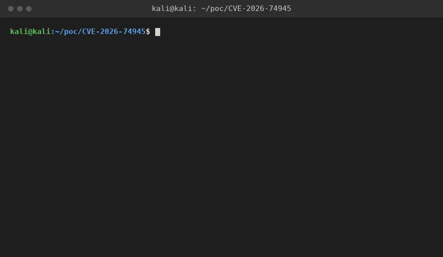

<!doctype html>
<html lang="en" class="bg-primary">
<head>
<meta charset="utf-8">
<meta name="viewport" content="width=device-width, initial-scale=1">
<meta name="description" content="Firefox sanitizes web fonts through OTS before use. OTS&#x27;s expanding output stream allocates with a raw reallocator that never zeroes memory, and its Seek accepts any position up to">
<meta name="theme-color" content="#1c1917">
<title>CVE-2026-74945 &mdash; Uninitialized heap disclosure through a crafted web font | cli0ck</title>
<link href="../assets/site.css" rel="stylesheet">
<link href="../assets/writeup.css" rel="stylesheet">
</head>
<body>

<header id="header" class="bg-secondary fixed transition-colors w-full z-50">
  <nav class="border-b border-gray-300 lg:px-6 px-4 py-2.5">
    <div class="flex flex-wrap items-center justify-between max-w-screen-xl mx-auto">
      <a href="../index.html" class="flex items-center">
        <span class="font-semibold mr-3 text-2xl text-white">cli<span class="text-accent">0</span>ck</span>
      </a>
      <div class="flex items-center lg:order-2">
        <button type="button" id="menu-btn" class="inline-flex items-center lg:hidden ml-1 p-2 text-white">
          <span class="sr-only">Open main menu</span>
          <svg fill="currentColor" class="h-6 w-6" viewBox="0 0 20 20" aria-hidden="true"><path fill-rule="evenodd" d="M3 5h14a1 1 0 100-2H3a1 1 0 000 2zm0 6h14a1 1 0 100-2H3a1 1 0 000 2zm0 6h14a1 1 0 100-2H3a1 1 0 000 2z" clip-rule="evenodd"/></svg>
        </button>
      </div>
      <div class="hidden items-center justify-between lg:flex lg:order-1 lg:w-auto w-full" id="menu">
        <ul class="flex flex-col font-medium lg:flex-row lg:mt-0 lg:space-x-8 mt-4 text-xl">
            <li><a href="../index.html" class="block pl-3 pr-4 py-2 text-white">Home</a></li>
            <li><a href="../research.html" class="block pl-3 pr-4 py-2 text-white">Research</a></li>
            <li><a href="../ctf.html" class="block pl-3 pr-4 py-2 text-white">CTF</a></li>
            <li><a href="../index.html#crew" class="block pl-3 pr-4 py-2 text-white">The Crew</a></li>
            <li><a href="../index.html#record" class="block pl-3 pr-4 py-2 text-white">Record</a></li>
            <li><a href="../contact.html" class="block pl-3 pr-4 py-2 text-white">Contact</a></li>
        </ul>
      </div>
    </div>
  </nav>
</header>
<main>
  <article class="lg:pb-24 lg:pt-40 lg:px-6 pb-16 pt-32 px-3">
    <div class="max-w-3xl mx-auto">
      <a href="../research.html" class="hover:text-accent text-white/40 text-xs tracking-[0.2em] transition-colors uppercase">&larr; Research</a>
      <h1 class="font-semibold leading-tight lg:text-5xl mb-4 mt-6 text-3xl text-white">Uninitialized heap disclosure through a crafted web font</h1>
      <p class="font-light lg:text-xl mb-4 text-lg text-white/80">Firefox sanitizes web fonts through OTS before use.</p>
      <div class="border-b border-white/15 pb-10">
        <p class="font-medium text-sm text-white tracking-[0.15em] uppercase">Abdulaziz Alasaiqah</p>
        <p class="mt-2 text-white/40 text-xs tracking-[0.15em] uppercase">CVE-2026-74945 &middot; RESOLVED FIXED</p>
        <div class="flex flex-wrap gap-2 mt-6"><span class="border border-white/15 hover:border-accent/40 hover:text-accent px-3 py-1 rounded-full text-white/60 text-xs transition-colors">Mozilla Firefox</span><span class="border border-white/15 hover:border-accent/40 hover:text-accent px-3 py-1 rounded-full text-white/60 text-xs transition-colors">Graphics, Text</span><span class="border border-white/15 hover:border-accent/40 hover:text-accent px-3 py-1 rounded-full text-white/60 text-xs transition-colors">Uninitialized Memory Disclosure</span><span class="border border-white/15 hover:border-accent/40 hover:text-accent px-3 py-1 rounded-full text-white/60 text-xs transition-colors">High</span></div>
      </div>

      <div class="border border-white/10 gap-6 grid grid-cols-2 lg:grid-cols-4 md:grid-cols-3 mt-10 p-6 rounded-lg">
          <div>
            <p class="text-white/40 text-xs tracking-[0.2em] uppercase">Vendor</p>
            <p class="mt-1 text-white">Mozilla Firefox</p>
          </div>
          <div>
            <p class="text-white/40 text-xs tracking-[0.2em] uppercase">Component</p>
            <p class="mt-1 text-white">Core / Graphics: Text</p>
          </div>
          <div>
            <p class="text-white/40 text-xs tracking-[0.2em] uppercase">Class</p>
            <p class="mt-1 text-white">Uninitialized Memory Disclosure</p>
          </div>
          <div>
            <p class="text-white/40 text-xs tracking-[0.2em] uppercase">CWE</p>
            <p class="mt-1 text-white">908, 200</p>
          </div>
          <div>
            <p class="text-white/40 text-xs tracking-[0.2em] uppercase">CVSS</p>
            <p class="mt-1 text-white">6.5 Medium (Mozilla)</p>
          </div>
          <div>
            <p class="text-white/40 text-xs tracking-[0.2em] uppercase">Fixed in</p>
            <p class="mt-1 text-white">Firefox 154, ESR 115.39, ESR 140.14, ESR 153.1; Thunderbird 140.14, 153.1, 154</p>
          </div>
          <div>
            <p class="text-white/40 text-xs tracking-[0.2em] uppercase">Interaction</p>
            <p class="mt-1 text-white">None, page load only</p>
          </div>
        </div>

      <div class="pt-10">

            <h2 class="break-words font-semibold lg:text-3xl mb-4 mt-12 scroll-mt-24 text-2xl text-white">Summary</h2>
            <p class="break-words leading-relaxed mb-5 text-white/80">Firefox sanitizes web fonts through OTS before use. OTS's expanding output stream allocates with a raw reallocator that never zeroes memory, and its Seek accepts any position up to the allocation size without zero-filling the gap. When a font's cmap carries a format-14 subtable with a large nonDefaultUVSOffset, OTS seeks forward and leaves an uninitialized-heap gap inside the emitted font. A companion format-4 subtable maps U+FFFF into that gap, so measuring the character with canvas measureText returns an advance derived from uninitialized heap, about two attacker-recoverable bytes per lookup over a roughly 64 KB window.</p>
          

          
            <h2 class="break-words font-semibold lg:text-3xl mb-4 mt-12 scroll-mt-24 text-2xl text-white">Root cause</h2>
            <p class="break-words leading-relaxed mb-5 text-white/80">Three independent defects line up. The OTS output allocator never zeroes memory. gfxOTSExpandingMemoryStream::Seek does not zero the skipped region, and forget() sizes the buffer to the highest offset reached, so any gap is handed to the caller carrying uninitialized heap. Finally the format-4 glyph lookup bounds-checks against the remainder of the whole cmap table rather than the subtable, so a jump into the neighbouring subtable's uninitialized bytes still passes the check.</p>
          

          
            <h2 class="break-words font-semibold lg:text-3xl mb-4 mt-12 scroll-mt-24 text-2xl text-white">Proof of concept</h2>
            <ol class="list-decimal marker:text-accent mb-6 pl-5 space-y-2 text-white/80">
              <li class="break-words leading-relaxed">Serve a WOFF or OTF via @font-face whose cmap pairs a format-4 subtable, with an odd id_range_offset on the last 0xFFFF segment, with a format-14 subtable carrying a large nonDefaultUVSOffset, plus maxp.numGlyphs set to 65535 and a distinct hmtx advance per glyph.</li>
              <li class="break-words leading-relaxed">From content, call ctx.measureText("￿").</li>
              <li class="break-words leading-relaxed">The returned advance corresponds to a glyph id read from uninitialized heap. The gap's size and position are controlled by the chosen nonDefaultUVSOffset, so repeated measurements with different offsets can in principle be steered across a roughly 64 KB window; this was not exercised as a systematic scan here.</li>
            </ol>
            <figure>
              <div class="wu-diagram mb-6 overflow-x-auto rounded-lg">
                <svg viewBox="0 0 760 314" role="img" aria-label="Uninitialized heap gap in the sanitized font leaked through text measurement">
                  <defs>
                    <marker id="fArrow" markerWidth="9" markerHeight="9" refX="6" refY="3" orient="auto"><path d="M0 0 L6 3 L0 6 Z" fill="#d97706"/></marker>
                  </defs>
                  <text fill="#a8a29e" x="380" y="24" text-anchor="middle" font-family="ui-monospace, monospace" font-size="11">OTS sanitized font buffer, moz_xrealloc, no zero-fill</text>

                  <rect class="d-ok" x="70" y="40" width="180" height="60" rx="4"/>
                  <text fill="#e7e5e4" x="160" y="75" text-anchor="middle" font-family="ui-monospace, monospace" font-size="12">written bytes</text>

                  <rect class="d-bad d-pulse" x="250" y="40" width="280" height="60" rx="4"/>
                  <text fill="#f0836a" x="390" y="66" text-anchor="middle" font-family="ui-monospace, monospace" font-weight="600" font-size="12.5">UNINITIALIZED GAP</text>
                  <text fill="#f0836a" x="390" y="84" text-anchor="middle" font-family="ui-monospace, monospace" font-size="11">~64 KB of process heap</text>

                  <rect class="d-box" x="530" y="40" width="160" height="60" rx="4"/>
                  <text fill="#e7e5e4" x="610" y="75" text-anchor="middle" font-family="ui-monospace, monospace" font-size="12">format-4 subtable</text>

                  <path class="d-flow" d="M390 100 L390 149" marker-end="url(#fArrow)"/>

                  <rect class="d-box" x="242" y="150" width="296" height="54" rx="8"/>
                  <text fill="#d97706" x="390" y="173" text-anchor="middle" font-family="ui-monospace, monospace" font-size="12.5" font-weight="600">ctx.measureText("U+FFFF")</text>
                  <text fill="#a8a29e" x="390" y="191" text-anchor="middle" font-family="ui-monospace, monospace" font-size="11">the lookup lands inside the gap</text>

                  <path class="d-flow d-pulse" d="M390 205 L390 239" marker-end="url(#fArrow)"/>

                  <rect class="d-bad d-pulse" x="242" y="240" width="296" height="56" rx="8"/>
                  <text fill="#f0836a" x="390" y="264" text-anchor="middle" font-family="ui-monospace, monospace" font-size="12" font-weight="600">advance = 2 leaked heap bytes</text>
                  <text fill="#f0836a" x="390" y="282" text-anchor="middle" font-family="ui-monospace, monospace" font-size="11">readable from JS, gap offset attacker-controlled</text>
                </svg>
              </div>
              <figcaption class="mb-8 text-center text-white/40 text-xs tracking-[0.15em] uppercase">The lookup for U+FFFF lands inside the uninitialized gap. Its glyph advance, readable from script, leaks two bytes of heap per measurement.</figcaption>
            </figure>
            <pre class="bg-black/40 border border-white/10 max-w-full mb-6 overflow-x-auto p-4 rounded-lg"><code class="font-mono leading-relaxed text-sm text-white/90"><span class="text-white/40">// content-side trigger, advance leaks the uninitialized glyph id</span>
const w = ctx.measureText("￿").width;   // maps into the uninitialized gap
<span class="text-white/40">// on a fixed build (154 / ESR 140.14+) the same measurement resolves to glyph id 0</span></code></pre>
            <figure style="margin-top:18px">
              
              <figcaption class="mb-8 text-center text-white/40 text-xs tracking-[0.15em] uppercase">Live capture: make_font.py builds the crafted font, analyze_leak.py reads it back, and od shows the raw bytes carrying the attack. 00 00 40 01 is the odd idRangeOffset, 00 00 80 00 is the format-14 nonDefaultUVSOffset that points past the emitted data.</figcaption>
            </figure>
            <figure style="margin-top:18px">
              <video src="assets/shot-font-leak-real.mp4" poster="assets/shot-font-leak-real.png" autoplay loop muted playsinline aria-label="Screen-recorded video of the trigger page running in a vulnerable Firefox 140.11.0esr: clicking Measure runs measureText for U+FFFF and returns glyph id 1272, a non-zero value derived from uninitialized heap" class="block h-auto max-h-[480px] max-w-full mx-auto my-8 rounded-lg w-auto">Your browser does not support video playback. <a class="hover:underline text-accent" href="assets/shot-font-leak-real.mp4">Download the clip</a>.</video>
              <figcaption class="mb-8 text-center text-white/40 text-xs tracking-[0.15em] uppercase">Screen-recorded video, not a mockup: a headless Firefox 140.11.0esr (before the 140.14 fix) loads trigger.html, the Measure button is clicked, and canvas measureText reads the glyph advance back live. U+FFFF resolves to glyph id 1272 and U+FFFD to 2051, each encoding roughly two bytes recovered from uninitialized process heap. A patched build resolves all of these to glyph id 0.</figcaption>
            </figure>
          

          
            <h2 class="break-words font-semibold lg:text-3xl mb-4 mt-12 scroll-mt-24 text-2xl text-white">Tools</h2>
            <ol class="list-decimal marker:text-accent mb-6 pl-5 space-y-2 text-white/80">
              <li class="break-words leading-relaxed">Python 3 with fontTools and Brotli to assemble the OTF/WOFF and splice in the crafted cmap (make_font.py).</li>
              <li class="break-words leading-relaxed">A small byte-level analyzer (analyze_leak.py) that verifies the crafted subtables directly from the file, independent of any font library.</li>
              <li class="break-words leading-relaxed">Firefox, reading the leaked glyph advance back through the canvas measureText API.</li>
            </ol>
          

          
            <h2 class="break-words font-semibold lg:text-3xl mb-4 mt-12 scroll-mt-24 text-2xl text-white">Impact</h2>
            <p class="break-words leading-relaxed mb-5 text-white/80">A web-controllable, repeatable disclosure of uninitialized process heap that can reveal pointers or secrets. OTS runs in-process ahead of platform-specific rasterization and is not among the sandboxed libraries, so the sanitizer-level gap this bug relies on is not tied to a specific rasterization backend; this was reproduced on the build captured above and was not separately tested across every platform.</p>
          

          
            <h2 class="break-words font-semibold lg:text-3xl mb-4 mt-12 scroll-mt-24 text-2xl text-white">Fix</h2>
            <p class="break-words leading-relaxed mb-5 text-white/80">Two independent changes, each targeting one of the defects described above: zero the newly-allocated range in the OTS output stream so no gap is ever uninitialized, and check the format-4 subtable length so the glyph lookup cannot bound against the rest of the cmap. Either change on its own would close the specific chain demonstrated here.</p>
          

          <a href="https://bugzilla.mozilla.org/show_bug.cgi?id=2057808" target="_blank" rel="noopener" class="border border-white/15 hover:border-accent/40 hover:text-accent px-3 py-1 rounded-full text-white/60 text-xs transition-colors inline-flex items-center gap-2 mt-2">
            <span>View on Mozilla Bugzilla</span>
            <svg viewBox="0 0 24 24" fill="none" stroke="currentColor" stroke-width="2" stroke-linecap="round" stroke-linejoin="round" aria-hidden="true"><path d="M7 17 17 7M8 7h9v9"/></svg>
          </a>
          <a style="margin-inline-start:10px" href="https://github.com/defineid/Palimpsest" target="_blank" rel="noopener" class="border border-white/15 hover:border-accent/40 hover:text-accent px-3 py-1 rounded-full text-white/60 text-xs transition-colors inline-flex items-center gap-2 mt-2">
            <span>Proof of concept code</span>
            <svg viewBox="0 0 24 24" fill="none" stroke="currentColor" stroke-width="2" stroke-linecap="round" stroke-linejoin="round" aria-hidden="true"><path d="M7 17 17 7M8 7h9v9"/></svg>
          </a>
      </div>

      <div class="border-t border-white/15 mt-16 pt-10">
        <p class="mb-6 text-white/40 text-xs tracking-[0.2em] uppercase">More research</p>
        <div class="gap-x-6 gap-y-12 grid grid-cols-2">
        <a href="cve-2026-74943-rasterimage-use-after-free.html" class="block group rx-card">
          <div class="aspect-[2/3] bg-secondary mb-4 overflow-hidden rounded-lg">
            
          </div>
          <p class="c-meta mb-2">CVE-2026-74943 &middot; Critical</p>
          <h2 class="font-semibold group-hover:text-accent leading-snug mb-2 text-lg text-white transition-colors">Use-after-free in RasterImage surface discard</h2>
          <p class="leading-snug text-sm text-white/60">Firefox stores decoded image surfaces in a SurfaceCache keyed by a raw, non-owning pointer to the owning image, and notifies that…</p>
        </a>
        <a href="cve-2026-39154-cometchat-stored-xss.html" class="block group rx-card">
          <div class="aspect-[2/3] bg-secondary mb-4 overflow-hidden rounded-lg">
            
          </div>
          <p class="c-meta mb-2">CVE-2026-39154 &middot; High</p>
          <h2 class="font-semibold group-hover:text-accent leading-snug mb-2 text-lg text-white transition-colors">Stored XSS in CometChat group messages</h2>
          <p class="leading-snug text-sm text-white/60">An authenticated user can inject a persistent JavaScript payload into a group chat message through the data.text parameter of the…</p>
        </a>
        </div>
      </div>
    </div>
  </article>

  <section class="bg-secondary lg:px-10 lg:py-20 px-3 py-16">
    <div class="max-w-screen-xl mx-auto text-center">
      <h2 class="font-semibold lg:text-5xl mb-4 text-3xl text-white">Let&rsquo;s talk</h2>
      <p class="font-light lg:mb-10 lg:text-2xl mb-8 text-lg text-white/80">Tell us what you&rsquo;re building, and what keeps you up at night.</p>
      <div class="inline-block">
          <a href="../contact.html" class="bg-gradient-to-r border border-accent flex from-accent items-center rounded-full to-accent-dark transition-all">
            <div class="bg-white/20 flex h-[44px] items-center justify-center rounded-full w-[44px]">
              <span class="text-white text-xl">&rarr;</span>
            </div>
            <div class="font-medium px-9 text-lg text-white">Put us on your target</div>
          </a>
        </div>
    </div>
  </section>
</main>
<footer class="bg-secondary">
  <div class="border-accent/30 border-y divide-accent/30 divide-y">
    <div class="divide-accent/30 divide-x flex">
      <div class="flex flex-1 items-center">
        <span class="font-semibold m-auto p-6 text-2xl text-white">cli<span class="text-accent">0</span>ck</span>
      </div>
      <div class="flex-1 hidden lg:block p-6 text-center">
        <p class="mb-3 text-white">Connect With Us</p>
        <div class="flex gap-6 justify-center">
          <a href="https://www.linkedin.com/in/abdulaziz-alasaiqah-b74071334" target="_blank" rel="noopener noreferrer" aria-label="LinkedIn"><svg viewBox="0 0 24 24" width="22" height="22" fill="currentColor" class="text-white" aria-hidden="true"><path d="M4.98 3.5a2.5 2.5 0 1 1 0 5 2.5 2.5 0 0 1 0-5ZM3 9h4v12H3V9Zm7 0h3.8v1.7h.05c.53-1 1.83-2.05 3.77-2.05 4.03 0 4.78 2.65 4.78 6.1V21h-4v-5.5c0-1.31-.02-3-1.83-3-1.83 0-2.11 1.43-2.11 2.9V21h-4V9Z"/></svg></a>
          <a href="https://github.com/defineid" target="_blank" rel="noopener noreferrer" aria-label="GitHub"><svg viewBox="0 0 24 24" width="22" height="22" fill="currentColor" class="text-white" aria-hidden="true"><path d="M12 .5a12 12 0 0 0-3.79 23.4c.6.11.82-.26.82-.58v-2.03c-3.34.73-4.04-1.61-4.04-1.61-.55-1.39-1.34-1.76-1.34-1.76-1.09-.75.08-.73.08-.73 1.2.08 1.84 1.24 1.84 1.24 1.07 1.83 2.8 1.3 3.49.99.11-.78.42-1.3.76-1.6-2.67-.3-5.47-1.33-5.47-5.93 0-1.31.47-2.38 1.24-3.22-.12-.3-.54-1.52.12-3.18 0 0 1.01-.32 3.3 1.23a11.5 11.5 0 0 1 6 0c2.29-1.55 3.3-1.23 3.3-1.23.66 1.66.24 2.88.12 3.18.77.84 1.24 1.91 1.24 3.22 0 4.61-2.8 5.62-5.48 5.92.43.37.81 1.1.81 2.22v3.29c0 .32.21.7.82.58A12 12 0 0 0 12 .5Z"/></svg></a>
          <a href="mailto:info@cli0ck.com" aria-label="Email"><svg viewBox="0 0 24 24" width="22" height="22" fill="none" stroke="currentColor" stroke-width="1.7" class="text-white" aria-hidden="true"><rect x="2.5" y="4.5" width="19" height="15" rx="2"/><path d="m3 6 9 7 9-7"/></svg></a>
        </div>
      </div>
      <div class="flex-1 lg:text-center p-6">
        <ul class="flex flex-col">
          <li><a href="../index.html" class="text-white">Home</a></li>
          <li><a href="../research.html" class="text-white">Research</a></li>
          <li><a href="../ctf.html" class="text-white">CTF</a></li>
          <li><a href="../index.html#crew" class="text-white">The Crew</a></li>
          <li><a href="../index.html#record" class="text-white">Record</a></li>
          <li><a href="../contact.html" class="text-white">Contact</a></li>
        </ul>
      </div>
    </div>
    <div class="lg:hidden px-16 py-6 text-center">
      <p class="mb-3 text-white">Connect with us</p>
      <div class="flex gap-6 justify-center">
          <a href="https://www.linkedin.com/in/abdulaziz-alasaiqah-b74071334" target="_blank" rel="noopener noreferrer" aria-label="LinkedIn"><svg viewBox="0 0 24 24" width="22" height="22" fill="currentColor" class="text-white" aria-hidden="true"><path d="M4.98 3.5a2.5 2.5 0 1 1 0 5 2.5 2.5 0 0 1 0-5ZM3 9h4v12H3V9Zm7 0h3.8v1.7h.05c.53-1 1.83-2.05 3.77-2.05 4.03 0 4.78 2.65 4.78 6.1V21h-4v-5.5c0-1.31-.02-3-1.83-3-1.83 0-2.11 1.43-2.11 2.9V21h-4V9Z"/></svg></a>
          <a href="https://github.com/defineid" target="_blank" rel="noopener noreferrer" aria-label="GitHub"><svg viewBox="0 0 24 24" width="22" height="22" fill="currentColor" class="text-white" aria-hidden="true"><path d="M12 .5a12 12 0 0 0-3.79 23.4c.6.11.82-.26.82-.58v-2.03c-3.34.73-4.04-1.61-4.04-1.61-.55-1.39-1.34-1.76-1.34-1.76-1.09-.75.08-.73.08-.73 1.2.08 1.84 1.24 1.84 1.24 1.07 1.83 2.8 1.3 3.49.99.11-.78.42-1.3.76-1.6-2.67-.3-5.47-1.33-5.47-5.93 0-1.31.47-2.38 1.24-3.22-.12-.3-.54-1.52.12-3.18 0 0 1.01-.32 3.3 1.23a11.5 11.5 0 0 1 6 0c2.29-1.55 3.3-1.23 3.3-1.23.66 1.66.24 2.88.12 3.18.77.84 1.24 1.91 1.24 3.22 0 4.61-2.8 5.62-5.48 5.92.43.37.81 1.1.81 2.22v3.29c0 .32.21.7.82.58A12 12 0 0 0 12 .5Z"/></svg></a>
          <a href="mailto:info@cli0ck.com" aria-label="Email"><svg viewBox="0 0 24 24" width="22" height="22" fill="none" stroke="currentColor" stroke-width="1.7" class="text-white" aria-hidden="true"><rect x="2.5" y="4.5" width="19" height="15" rx="2"/><path d="m3 6 9 7 9-7"/></svg></a>
        </div>
    </div>
  </div>
  <p class="py-6 text-center text-white text-xs">&copy; 2026 cli0ck. All Rights Reserved. &middot; Riyadh, Kingdom of Saudi Arabia</p>
</footer>
<script>
(function(){
  var b = document.getElementById('menu-btn'), m = document.getElementById('menu');
  if (b && m) b.addEventListener('click', function(){ m.classList.toggle('hidden'); });
})();
</script>
</body>
</html>
